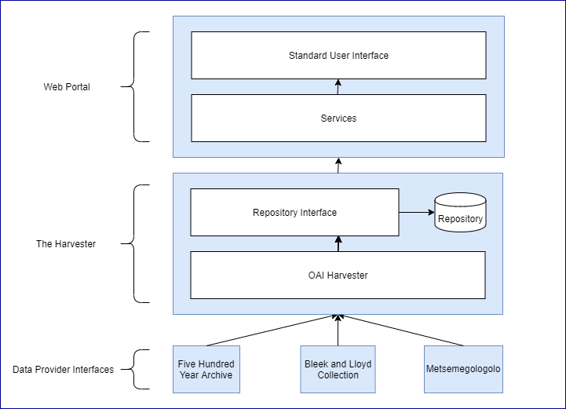
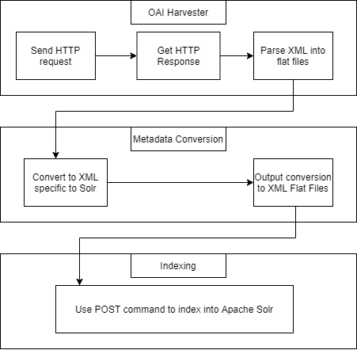
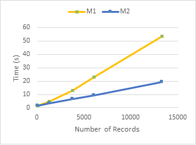
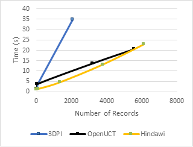
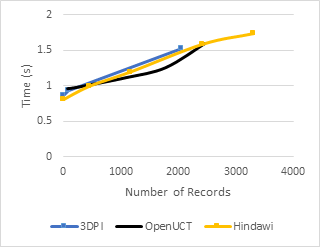

HERIPORT Project

Project Context
Project Goals
Project Results
sed vehicula.

The project aimed to develop a standalone harvester component of the centralized cultural heritage portal that entails features that can be considered low-cost while using best practices. This was done by extensively using metadata aggregation and OAI-PMH. In terms of low-cost, the aim was to create a component that conformed to the following features: one that was simple, scalable, and easy to install and maintain. Therefore, the Harvester was made to be applicable to many systems and repositories. The primary objective of the project was to demonstrate the viability of the component as a proof of concept while using a software engineering approach. A high level architectural overview of all three components are shown in Figure 1 below.
Figure 1. Overall Architecture DiagramThe Harvester component consists of the OAI harvester and repository. From Figure 1 in the previous section, the Repository Interface refers to the interface provided by Apache Solr and the Repository refers to XML flat files. The OAI harvester harvests records into the repository from the provided data provider interfaces. With the use of an interface, the frontend Web Portal can access the repository and provide value-added services to different users. Figure 2, below illustrates the functionality and processes that the Harvester component performs.
Figure 2. High-Level Overall ProcessTo evaluate the component, unit, integration, performance and scalibility testing was conducted.
Figure 3. M1 vs M2The performance of two machines, namely M1 and M2, was compared on each repository tested. Figure 3 above, illustrates the performance comparison on one of these repositories. As expected M1 out performed M2 due to its better processor and faster internet.
Figure 4. Repositories Comparison (End to End) Figure 5. Repositories Comparison (Local)Figures 4 and 5 illustrates the performance comparison between local and non-local processes on each repositories. The performance inconsistencies shown in Figure 4 are explained by external processing when requesting for records on a OAI-conformant repository. Figure 5, ignores times taken for the external processing, therefore showing a more accurate server side perfornance comparison. The diagrams above also illlustrate a linear increase in time as the number of records are increases therefore ensuring scalibility.
Key findings during the testing included the ability to cater to performance and scalability aspects. Another interesting finding was that the OAI harvesting times also depended on any pre-processing done by OAI-conformant repositories which were confirmed by Figures 4 and 5. The development of the Harvester component was concluded as a success in terms of integration, performance, and scalability. Furthermore, in terms of the whole system, all components integrated successfully providing us with a sensibly working Cultural Heritage Web Portal.